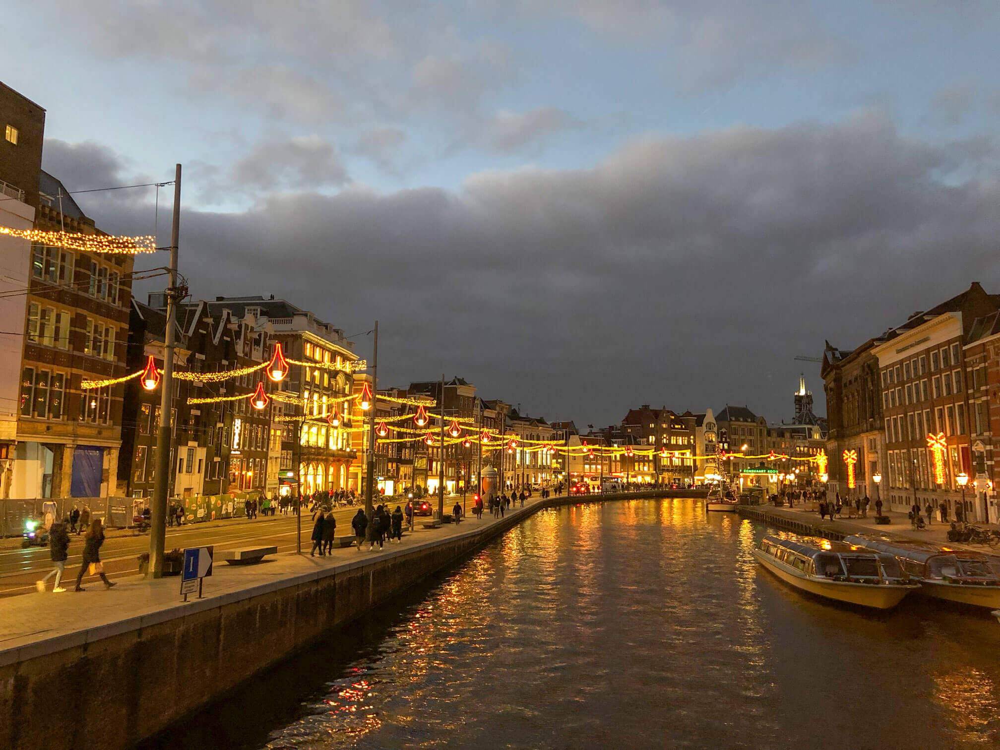

←
Go back
Written with love on the 02nd of March 2019
First published on 200wordsaday.com
The gorgeous sight of the magnificent building of Amsterdam's Central Station – standing proud on its own island, softly encircled by the freezing waters of the North Sea. And just like the waves of the sea were flowing, the ripples of people streaming down the compact streets of Amsterdam felt endless.
The city was buzzing, filled with carefree, delighted humans from around the globe. And while all of us were welcomed by the vicious Dutch December winds, that didn't seem to bother a single soul.
It felt like all of us were enchanted by the beauty of the city. When the sunlight met the calmly flowing water in the canals, it created wonderful patterns of light, reflecting on the facades of the time-worn buildings. The fascinating smells of caramel, cinnamon, coffee and nutmeg were flowing freely through the packed streets, enriching the holiday spirits feel.
My girlfriend and I were sipping on our cups of coffee, admiring the astonishing Dutch architecture that surrounded us. The stark contrast between mighty castles of the current and former Royal Palaces, the typical, narrow houses, lined one next to another along the cities canals and the newly constructed, futuristic buildings always left us in awe.
The memories of Amsterdam always manage to put a smile on my face. It's a city of contrast – with its long-lived buildings and newly constructed modernist structures to its usual calmness and rather light-hearted, chirpy holiday spirit, this town of diversity has a special place in my heart.
Amsterdam, I love you dearly. Yours truly, Alexander.